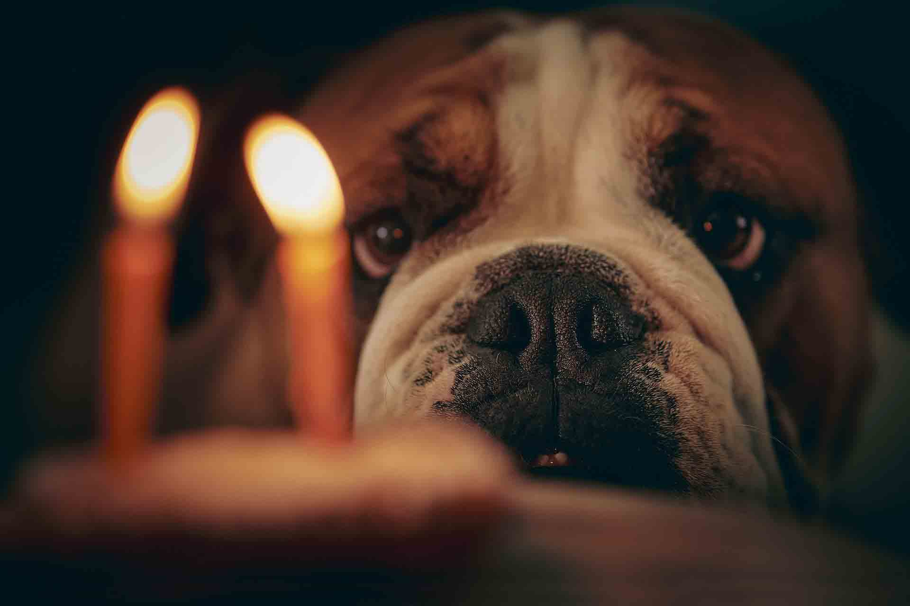

Ramène ta patte !
A l'occasion de la fête des animaux, l'association des animaux du 27 vous invite le samedi 8 octobre 2022 à 16h00 devant la mairie d'Etrépagny.
Un tas d'activités au programme !
-Activités ; Un toutou bar sera mis en place ainsi que des stands divers pour sensibiliser les gens au respect animal.
Plusieurs professionnels sont conviés, nous vous révélerons la liste très bientôt !
-Dons ; A cette occasion,
une collecte de dons sera mis en avant au profit de l'association.
Jouets, corquettes, paniers ou même bien des fonds si vous en avez la possibilité.
Les dons sont une nécessité pour l'association,
Il y a de nombreux animaux à s'occuper chaque jour et c'est en grande partie grace à vous si nous arrivons à les vacciner, les soigner et les nourrir.
Nous ne vous remercierons jamais assez pour ce que vous avez déjà fait et pour ce que vous comptez offrir.
-Concours ; Un concours de beauté sera au centre de cet événement,
Votre oiseau, chien, chat ainsi que toutes les autres pattes sont conviés !
Un shooting photo est à remporter pour le model voté par le public présent sur place !!
Nous comptons sur votre présence pour sensibiliser un maximum de personne, venez nombreux pour le bien de nos chers amis !
Cet événement sera l'occasion d'avoir un contexte d'échanges et de dialogue pour mettre en avant les bonnes pratiques autour de la cause animal.
Votre bienveillance et le respect de chacun seront les maîtres mots pour ce jour d'espoir.